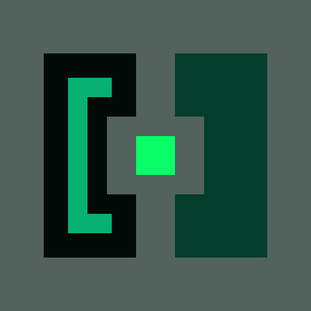
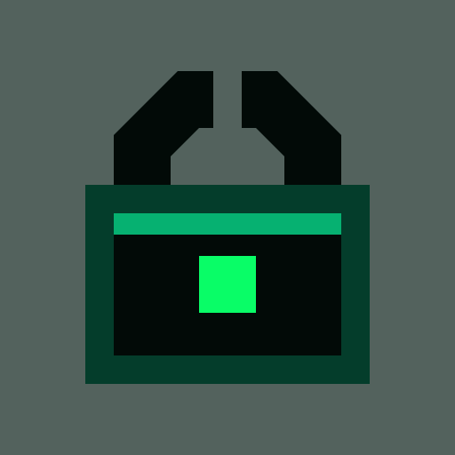

A — Gate
Access control
Two hardened doors isolate the monitored core like a fail-closed execution boundary.
Three distinct security constructions in KeeperHub green. The small-size row reuses each primary SVG to expose favicon collapse.

Two hardened doors isolate the monitored core like a fail-closed execution boundary.

A split shackle and bright liveness core make protection immediately recognizable.
Two defensive panels form an ownable shield while the centre remains visibly monitored.